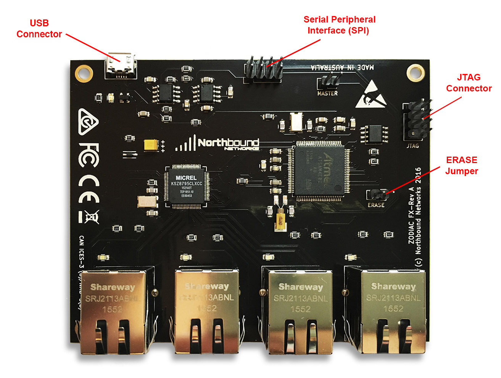
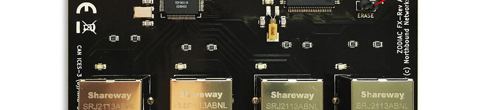

● Live · 2.5s Polling
GitHub
Hardware Telemetry & Performance
Real-time packet accounting, hardware counters, and OpenFlow 1.3 metrics from Northbound Networks Zodiac FX.
v--
Uptime: --:--:--
Ingress Traffic (RX)
Link Total
--
Egress Traffic (TX)
Link Total
--
CPU Temperature
Thermal
--°C
OpenFlow Echo Latency
Awaiting Link
--

Zodiac FX Rev B Hardware Board (Atmel SAM4E16E MCU & Micrel KSZ8995XA Switch)

Physical Port Layout: Port 1 on far left (openflow) to Port 4 on far right (controller link)
Traffic Flow & Wire Analytics
Real-time Ingress/Egress packet throughput & hardware vitals over time
Ingress (RX): -- pps
Egress (TX): -- pps
CPU Temperature (°C)
--°C
OpenFlow RTT Latency (µs)
-- µs
Per-Port Traffic Telemetry
Individual wire analytics for each physical interface with independent collapse controls
Port 1 — Untrusted Agent (RPi 3B+)
VLAN 100 · Far Left (Micro-USB / LED side)
IP: Unassigned
DOWN
0 pps
Port 2 — ISP Gateway Uplink
VLAN 100 · OpenFlow Data Plane (Middle Left)
Gateway Uplink
UP · 100M
-- pps
Port 3 — OpenFlow Standby
VLAN 100 · Middle Right
IP: Unassigned
DOWN
0 pps
Port 4 — Native SDN Controller Link
VLAN 200 · Rightmost (Adjacent Micro-USB)
IP: --
UP · 100M
-- pps
Physical Switch Interface
4x 100baseTX Ethernet Ports (Physical arrangement: Left to Right)
Port 1
Port 2
Port 3
Port 4
Port Matrix & Counter Telemetry
Parsed directly from switch /d_ports.htm · Zero Field Suppression
| Port / Interface | Link Status | VLAN Mode | Ingress (RX) | Egress (TX) | Dropped Pkts | CRC Errors |
|---|---|---|---|---|---|---|
| Awaiting switch telemetry stream from Zodiac FX... | ||||||
Device Console
Northbound Networks Serial CDC Interface (115200 8N1)
/dev/cu.usbmodem212201 · 115200 8N1
Zodiac FX Serial Link
Welcome to Zodiac FX Command Console.
Type 'show status', 'show ports', 'show of', or 'show config' to inspect switch state.